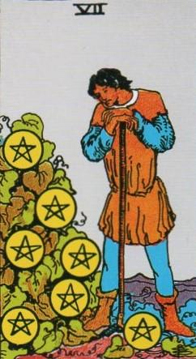
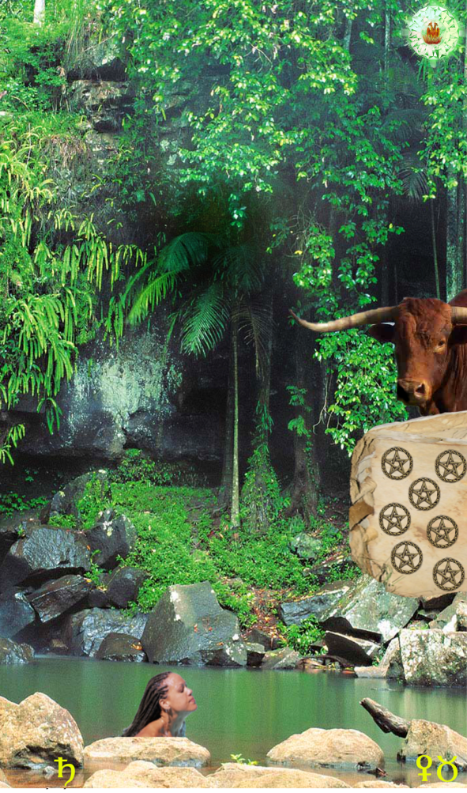
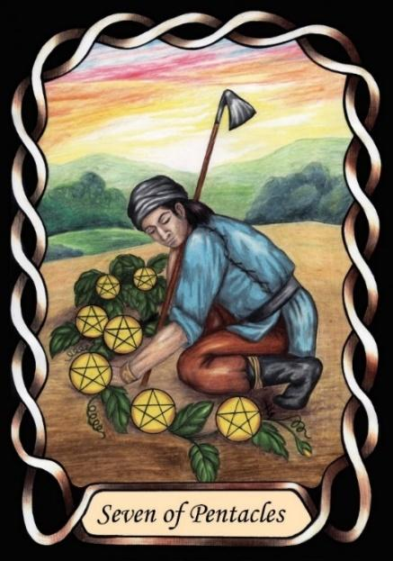

Seven of Pentacles



Sign |
|
Two: Parenting |
|
Sign Ruler |
|
Element |
Earth: practical |
Modality |
|
Symbol |
Bull |
Decan |
|
Decan Ruler |
|
Time |
May 10 - 19 |
Natural Taurus III
Raising children has now been mastered, as they leave home for their own lives. With time to spare, the Master now feels the empty nest syndrome, of a Saturnine bitter-sweet sorrow.
Saturn takes rulership of the decan now, which can introduce a degree of dissatisfaction. This can be a time of “second childhood” or “male menopause”. Having reached the Master stage in their career, the urge to perform financially is reduced, and they have time to consider where their lives have come from, and where they are going. They look back to their bachelor days, and wonder where the time went while they were providing for their family. They desire Saturn’s self-rule, and take up hobbies that they have not previously had time for. Traditionally Saturn is associated with gardening, and this can become the hobby of choice, but the wilder, freer version of gardening, called nature often summons them. Time spent in nature, perhaps exploring, touring, or fishing, salves the stress of working life.
Inverted: This can be an indication of excessive stress, as indicated by an urgent need for relaxation. It can also indicate a failure to achieve success.
Goldschneider Personology
Like the Geminis that follow Taurus, these have a strong need to be free to express themselves. Their Saturn influence can introduce stress into their lives, which they can react to in an explosive manner. They have a strong love of nature, and will ideally live in or near it.
RWS Imagery
A senior retiree, who turns their focus towards relaxation via gardening. His mouth is downturned, as he does not enjoy inactivity. Retirement does not agree with him.
Pymander Imagery
A highly natural scene, providing stress relief
Summary
Represents mastery, reflection, and transition to a new life phase.